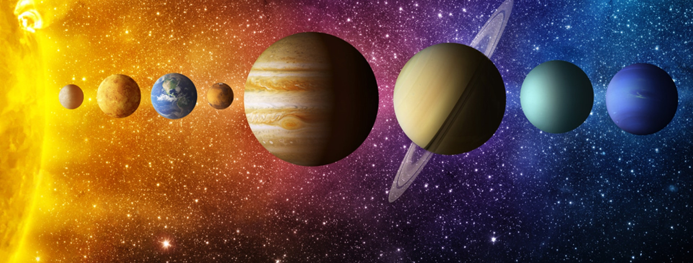
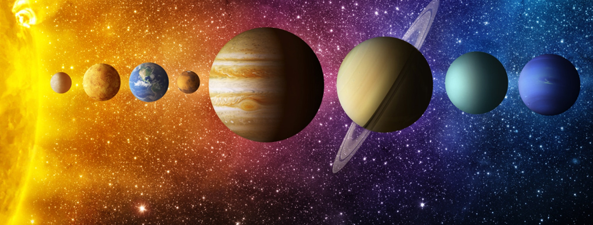

The Solar System is the gravitationally bound system of the Sun and the objects that orbit it, either directly or indirectly. Of the objects that orbit the Sun directly, the largest are the eight planets, with the remainder being smaller objects, the dwarf planets and small Solar System bodies.
Our solar system consists of our star, the Sun, and everything bound to it by gravity — the planets Mercury, Venus, Earth, Mars, Jupiter, Saturn, Uranus and Neptune, dwarf planets such as Pluto, dozens of moons and millions of asteroids, comets and meteoroids.
The Solar System formed 4.6 billion years ago from the gravitational collapse of a giant interstellar molecular cloud. The vast majority of the system's mass is in the Sun, with the majority of the remaining mass contained in Jupiter. The four smaller inner system planets, Mercury, Venus, Earth and Mars, are terrestrial planets, being primarily composed of rock and metal. The four outer system planets are giant planets, being substantially more massive than the terrestrials. The two largest planets, Jupiter and Saturn, are gas giants, being composed mainly of hydrogen and helium; the two outermost planets, Uranus and Neptune, are ice giants, being composed mostly of substances with relatively high melting points compared with hydrogen and helium, called volatiles, such as water, ammonia and methane. All eight planets have almost circular orbits that lie within a nearly flat disc called the ecliptic.
The Solar System also contains smaller objects.[f] The asteroid belt, which lies between the orbits of Mars and Jupiter, mostly contains objects composed, like the terrestrial planets, of rock and metal. Beyond Neptune's orbit lie the Kuiper belt and scattered disc, which are populations of trans-Neptunian objects composed mostly of ices, and beyond them a newly discovered population of sednoids. Within these populations, some objects are large enough to have rounded under their own gravity, though there is considerable debate as to how many there will prove to be.[9][10] Such objects are categorized as dwarf planets. The only certain dwarf planet is Pluto, with another trans-Neptunian object, Eris, expected to be, and the asteroid Ceres at least close to being a dwarf planet.[f] In addition to these two regions, various other small-body populations, including comets, centaurs and interplanetary dust clouds, freely travel between regions. Six of the planets, the six largest possible dwarf planets, and many of the smaller bodies are orbited by natural satellites, usually termed "moons" after the Moon. Each of the outer planets is encircled by planetary rings of dust and other small objects.
The solar wind, a stream of charged particles flowing outwards from the Sun, creates a bubble-like region in the interstellar medium known as the heliosphere. The heliopause is the point at which pressure from the solar wind is equal to the opposing pressure of the interstellar medium; it extends out to the edge of the scattered disc. The Oort cloud, which is thought to be the source for long-period comets, may also exist at a distance roughly a thousand times further than the heliosphere. The Solar System is located 26,000 light-years from the center of the Milky Way galaxy in the Orion Arm, which contains most of the visible stars in the night sky. The nearest stars are within the so-called Local Bubble, with the closest Proxima Centauri at 4.25 light-years.